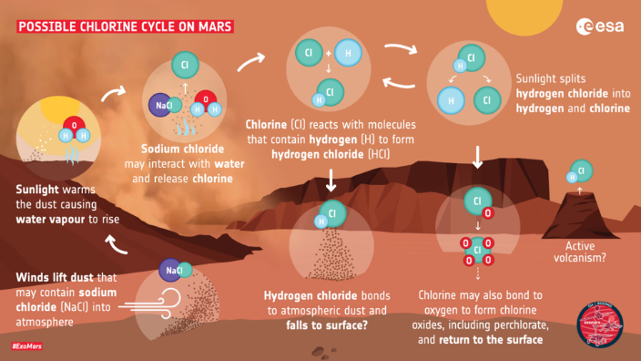

Új kémiát és gázciklust fedezett fel az európai-orosz marskísérlet

Hidrogén-klorid gázt fedezett fel a Mars légkörében az
ESA-Roszkozmosz ExoMars Trace Gas
Orbiter
(TGO) keringőegysége. Ez az első alkalom, hogy a bolygó vízvesztését is vizsgáló ExoMars TGO szondával új
gázt
fedeztek fel.
A Mars kutatásának kiemelt része a biológiai vagy geológiai aktivitáshoz köthető gázok kimérése, illetve a
bolygó
vízkészleteinek múltbéli és jelenlegi helyzetének felmérése is. Ebből nem csak arra keresik a választ, hogy
vajon
egykor lakható lehetett-e, hanem arra is, hogy vannak-e elérhető víztározók a jövő űrhajósai számára.
Az ExoMars csapatának két új tanulmánya a Science Advances nemzetközi tudományos lapban jelent meg,
bennük pedig teljesen új kémiai folyamatok mellett az évszakok változásairól, valamint a felszín és a légkör
kölcsönhatásairól is beszámolnak.
Először találtak hidrogén-kloridot a Marson, mellyel egyúttal először leltek halogén gázra is a légkörben,
így a bolygó egy teljesen új kémiai ciklusára derült fény. A hidrogén-klorid (HCl) gázt hidrogén és klór
atomok alkotják.
A különféle klór vagy kén alapú gázok vulkanikus aktivitás potenciális jelzői is lehetnek, többek között ennek
is köszönhetik
a kiemelt figyelmet. A hidrogén-klorid mérési eredményei azonban más forrásra utalnak, ugyanis azonos időben
roppant távoli helyeken
bukkant fel, környezetében pedig nem mutattak ki vulkáni aktivitásból származó más gázokat. A felfedezés tehát
azt sugallja, hogy
valamilyen teljesen új felszín-légkör kölcsönhatás állhat a háttérben, mely a marsi “poros” évszak
beköszöntével erősödhetett fel.


 A Földön kívüli élet kutatása a csillagászat kiemelt figyelemben részesülő területe.
Elsősorban az elmúlt évtizedben működött Kepler űrtávcsőnek köszönhetően tudjuk már, hogy a galaxisunkban
több bolygó van,
mint ahány csillag. Pedig csillagból sincs kevés, nagyságrendileg százmilliárd. De vajon hány olyan lehet a
rengeteg bolygó között,
ahol az élet fennmaradásának szempontjából kedvező feltételek uralkodnak? A legfontosabbnak tartott ilyen
feltétel a folyékony víz
jelenléte az égitesten. Tavaly már beszámoltunk egy, az exoóceánok nagy gyakoriságára rávilágító tudományos
eredményről.
Most egy másik kutatócsoport, egészen más megfontolások révén jutott ahhoz nagyon hasonló következtetésre.
A Földön kívüli élet kutatása a csillagászat kiemelt figyelemben részesülő területe.
Elsősorban az elmúlt évtizedben működött Kepler űrtávcsőnek köszönhetően tudjuk már, hogy a galaxisunkban
több bolygó van,
mint ahány csillag. Pedig csillagból sincs kevés, nagyságrendileg százmilliárd. De vajon hány olyan lehet a
rengeteg bolygó között,
ahol az élet fennmaradásának szempontjából kedvező feltételek uralkodnak? A legfontosabbnak tartott ilyen
feltétel a folyékony víz
jelenléte az égitesten. Tavaly már beszámoltunk egy, az exoóceánok nagy gyakoriságára rávilágító tudományos
eredményről.
Most egy másik kutatócsoport, egészen más megfontolások révén jutott ahhoz nagyon hasonló következtetésre.
{kind=link}